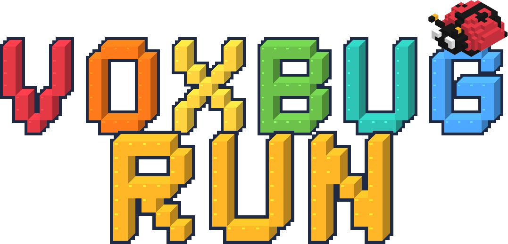
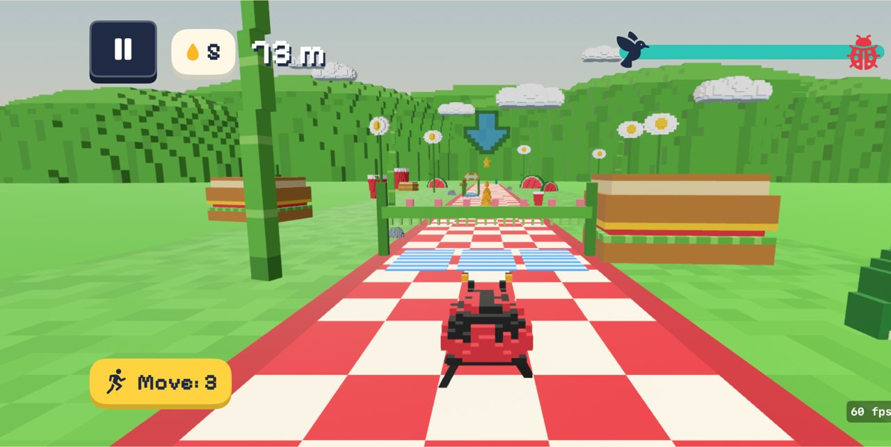
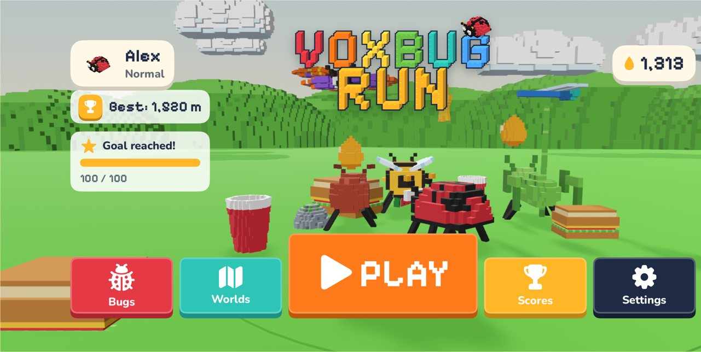
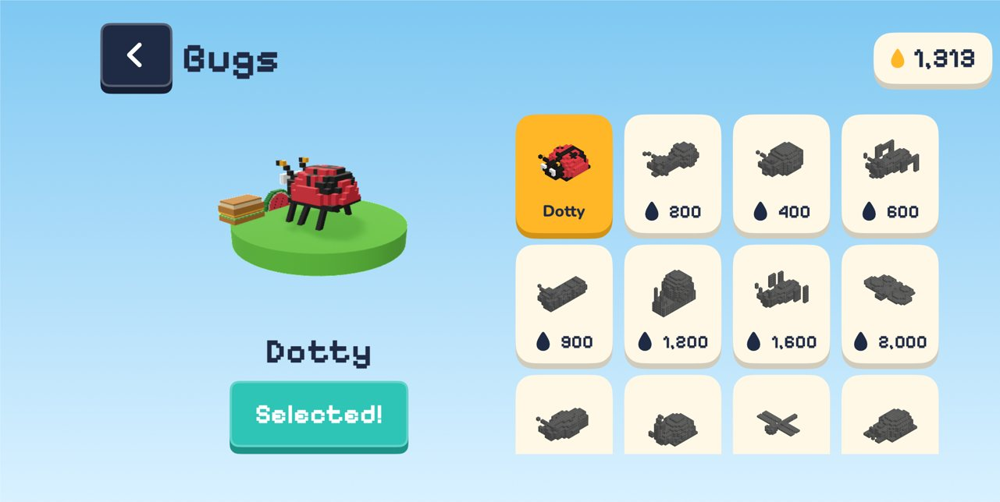
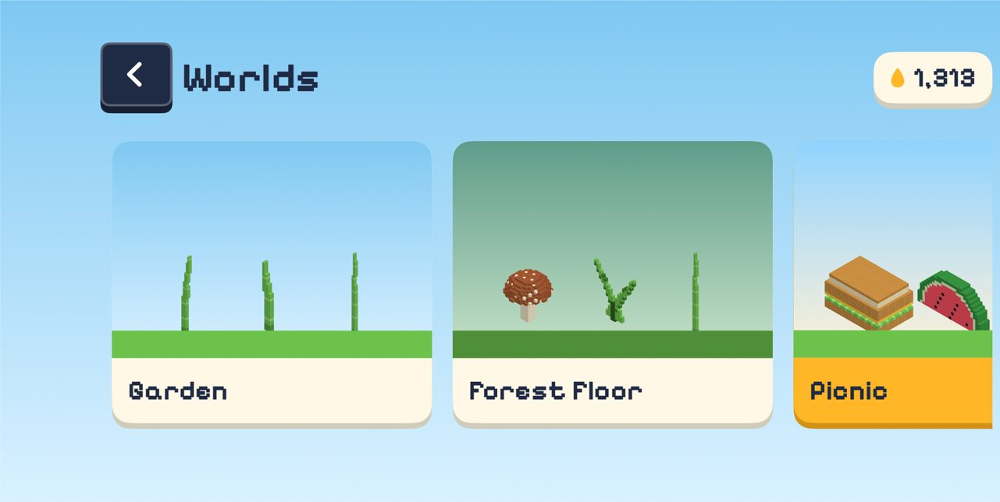

Jump, duck, dodge. For real.
Voxbug Run is a runner game kids play with their whole body. Stand in front of the iPhone or iPad. When you jump, duck or step to the side, your little voxel bug does the same, racing through the garden ahead of a hungry crow.
- iPhone & iPad
- Ages 4–10, grown-ups welcome
- 7 languages
- No ads, no tracking

Your body is the controller.
Prop the device up, step back until the camera sees you from head to knees, raise your hands and go. Every move on screen is a real move in the living room.
Hop over
Pebbles, logs and lava strips. Jump and your bug leaps.
Squat under
Low branches and angry wasps. Get small to slip beneath.
Change lanes
Step left or right to switch between the three lanes.
Keep running
Run on the spot to keep the crow behind you.
Power-ups add their own moves: flap your arms to fly with wings, punch to swat wasps with the Super Punch, clap to scare the crow away, and strike the pose shown on rainbow gates.
A whole little world to run through.
Six worlds, fourteen bugs and surprise challenge phases. The floor turns to lava, the rain falls in giant drops, acorns roll at you, and mushroom trampolines send you into a sky full of honey.



Easy for the little ones, sweaty for the big ones.
- TinySlow and forgiving, with a starting shield and no running required. Made for the youngest players.
- NormalThe classic run. Keep running on the spot and the speed slowly builds.
- AthleteFaster, denser and more honey. Your running pace sets the bug's speed.
Room to move? Not required.
- Tall or smallThe camera adapts to each player's size during a short calibration, so kids and adults can both play from a comfortable distance.
- Seated modeLean left or right to change lanes and bend forward to duck, from a chair or a wheelchair.
- Touch modeNo camera, or not in the mood? Swipe to play.
Built for kids. Calm for parents.
The camera only watches for moves. Nothing is recorded, stored or sent anywhere.
- Parent gatePurchases, settings and links out of the app sit behind a question only grown-ups can answer.
- Move points, never caloriesThe results screen counts jumps, ducks and minutes of moving. No calories, no body measurements.
- Water-break remindersChoose how often a gentle break reminder shows up, from every 5 to every 60 minutes.
- Family profilesEach player gets their own profile and best score, so siblings and parents can race each other. Profiles stay on the device.
- No ads, no trackingNo accounts, no analytics and no third-party SDKs.
Speaks your family's language.
Voxbug Run follows the device language and talks the moves out loud ("Jump!", "Duck!"), so kids who can't read yet can still play. Change it any time in Settings.
- English
- Türkçe
- Deutsch
- Español
- Français
- Português (Brasil)
- Italiano
Free to play.
The Garden world and the first bugs are free, and honey earned while running unlocks more. If you'd like everything at once, there are one-time unlocks. There are no subscriptions.
Purchases go through Apple, sit behind the parent gate and show their price in your local currency in the App Store.
| Full Garden Night Garden, Beach and Snowy Garden worlds, Forest Floor and Picnic, plus two special bugs. | One-time |
| Bug Squad Four special bugs: Dragonfly, Stag Beetle, Mantis and Jewel Beetle. | One-time |
| Honey Jar / Honey Barrel Extra honey for unlocking bugs and worlds sooner. Entirely optional. | Consumable |
Questions
How much space do we need?
About two big steps back from the device, usually 1.5–2.5 metres (5–8 ft), so the camera sees the player from head to knees, and enough room to jump and step to each side. Clear away anything you could trip over, and keep the device on a stable surface at about hip height.
Does the camera record my child?
No. Camera frames are analysed in memory by Apple's on-device body-pose detection and thrown away right after. Nothing is saved, uploaded or shared. See the privacy policy.
Which devices are supported?
iPhone and iPad with iOS 18 or later and a front camera. Without a camera you can still play with touch.
We bought something on another device. How do we get it back?
Open the Parent zone (behind the parent gate) → Store → Restore purchases, while signed in with the same Apple Account.
Something isn't working.
We're happy to help. Write to us from the support page.